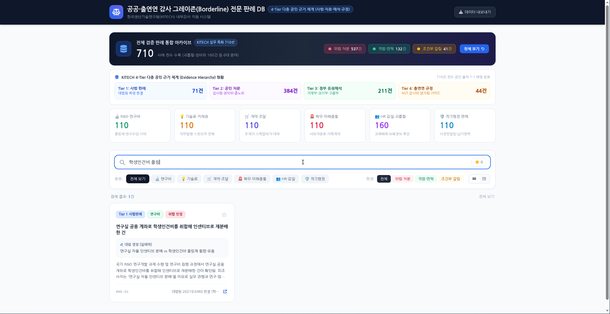

실무 3단계 활용 흐름
판례 검색부터 AI 법리 분석까지 1분 완결
1. 자연어 검색
업무 단어로 실시간 필터링
2. 원문 1-클릭 조회
구글·네이버 법률 & 구글 AI 개요
3. 김비서 캡처 연동
화면 캡처 전송 시 법리·조서 작성
1
자연어 검색 : 일상 업무 단어로 710선 판례 즉시 필터링
사건번호나 법률 용어를 몰라도 괜찮습니다. 평소 쓰시는 업무 단어(예: 학생인건비 풀링, 출장 식대, 쪼개기 계약)를 검색창에 치면 타이핑과 동시에 관련 판례만 즉시 화면에 남습니다.

🔍 주요 화면 안내:
- 전체 710선 아카이브: 위법 처분 537건, 적법·면책 132건, 조건부 갈림 41건 실시간 통계
- 4-Tier 다층 공인 근거: 사법 판례(71), 공인 처분(384), 정부 유권해석(211), 출연연 규정(44)
- 6대 분야 퀵 필터: 연구비(110), 기술료(110), 계약·조달(110), 복무·이해충돌(110), HR 갑질(160), 적극행정(110)
2
원문 1-클릭 조회 : 구글·네이버 법률 검색 & 구글 AI 개요 직결
카드를 클릭하면 상세 팝업이 열리며 사실관계와 법적 판단기준이 나타납니다. 하단의 검색 버튼을 누르면 새 창으로 공식 전문과 구글 AI 요약이 바로 연결됩니다.
구글 원문 검색
대법원 판결문 원문 및 상단 구글 AI 개요(법리 분석) 자동 출력
N 네이버 법률 검색
네이버 법률정보 및 관련 법령 조항 전문 직결
💡 감사인 실무 적용 체크포인트 (KITECH 적용)
팝업 내에 KITECH 현업 감사인이 일상감사 사전 예방 단계나 실지 조사에서 즉시 가동해야 할 실무 체크포인트(불시 계좌 실사, 직무 배제, 증빙 징구 요령 등)가 명시되어 있습니다.
3
김비서 AI 연동 : 캡처 전송 시 심층 법리 분석 및 감사 조서 작성
별도의 외부 AI를 찾아갈 필요가 전혀 없습니다. 판례 DB 화면을 보시다가 더 깊은 법리 검토나 맞춤형 감사 조서 작성이 필요할 때는, 화면 캡처 이미지를 대화창에 올려주시거나 판례 번호(예: RND-01)를 알려주시면 김비서가 즉시 핵심 법리 요약 및 실무 감사 조서를 작성해 드립니다.
김비서 실무 요청 예시
• "김비서, 이 캡처 사안(RND-01) 관련해서 KITECH 일상감사 사전 검토 의견서 초안 작성해줘"
• "이 판례에서 대법원이 무죄와 유죄를 가른 핵심 법리 분기점만 3줄로 정리해줘"